Kubernetes
Table of Contents
2 Vagrant Lab
https://blog.exxactcorp.com/building-a-kubernetes-cluster-using-vagrant/
git clone https://exxsyseng@bitbucket.org/exxsyseng/k8s_centos.git # Centos k8s Cluster git clone https://exxsyseng@bitbucket.org/exxsyseng/k8s_ubuntu.git # Ubuntu k8s Cluster
3 Course Overview
3.1 Course Introduction
fundamental parts of kubernetes
- going to install kubernetes for a lab
- going to work with pods
- going to do some deployments
4 Course Introduction
4.1 Course intro
5 What Is Kubernetes?
5.1 Kubernetes: Where It Came From
- written in go/golang
- came from google
- borg
- omega
- kubernetes
- omega
Kubernetes = K8s
5.2 Kubernetes: What and Why
Containers
- Challenges they bring
- brings new scalability challenges
- application developers do not care about cpu is running their code
- Pets vs Cattle
- kubernetes, I got this app and it consists of these containers
- kubernetes take care of all the hard work and logistics
- kubernetes, I got this app and it consists of these containers
- what is it made up of?
- standard package format
- manifest
- very platform agnostic
- as long as you can install the agent, it wil work
- lets you target deployments
- it makes decisions about to where to run it
- Kubernetes is moving very fast
- get your hands dirty and keep playing with it
6 Kubernetes Architecture
6.1 Module Intro
Big picture view
- masters
- nodes
- pods[[
- Services
- networking
- deployments
6.2 Big Picture View
Kubernetes is just an orchestrator for microservice apps
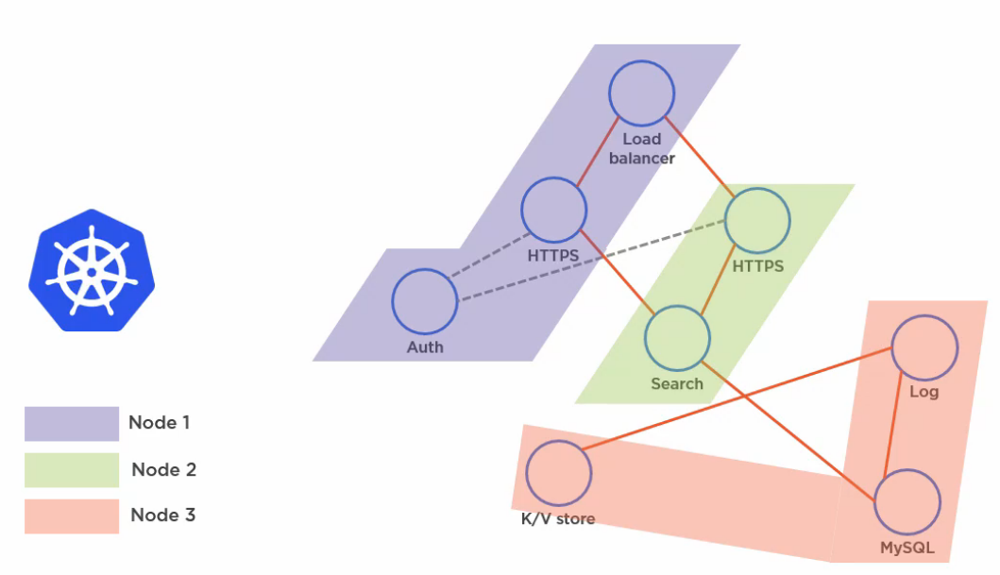
package up your application and give it to the cluster
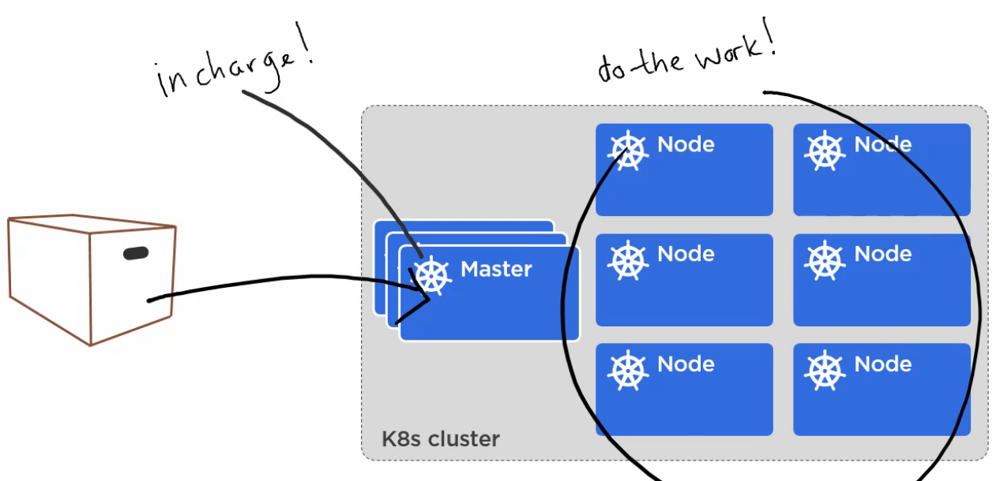
- Masters
- master control plane
- Nodes
- do the actual work
- report back to master about the changes that are happening
- package the application it up in what is called a deployment
- manifest file tells cluster what configuration settings it has
6.3 Masters
platform agnostic 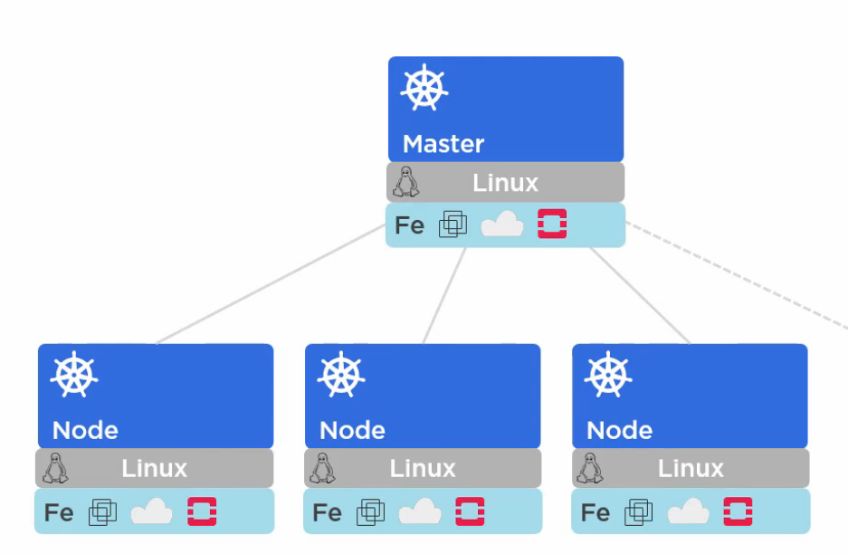
- all it wants is linux
- linux does not care if it running on bare metal,openstack, cloud
kube-apiserver
- front-end to the control plane
- exposes the API (REST)
- Consumes JSON via manfiest files
- declare the state of our app for. record of intent
- Cluster Store
- persistent storage
- cluster state and con fig
- uses etcd
- source of truth for the cluster
- kube controller-manager
- controller of controllers
- node controller
- endpoints controller
- namespace controller
- watches for changes
- helps maintain desired state
- current state = desired state
- kuber-scheduler
- watches apiserver for new pods
- assigns work to nodes
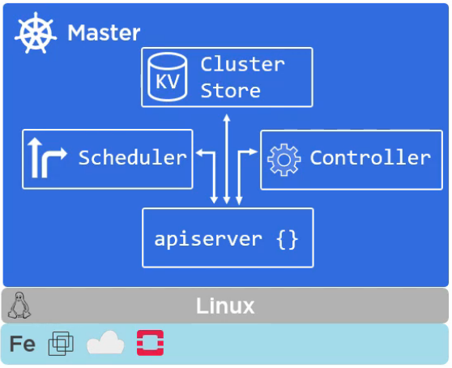
- issuing commands to the master
- master = api server
- that is where you are actually issuing commands
- master = api server
- kubectl talks to the apiserver (master) via json files
- works gets passed to nodes from the scheduler
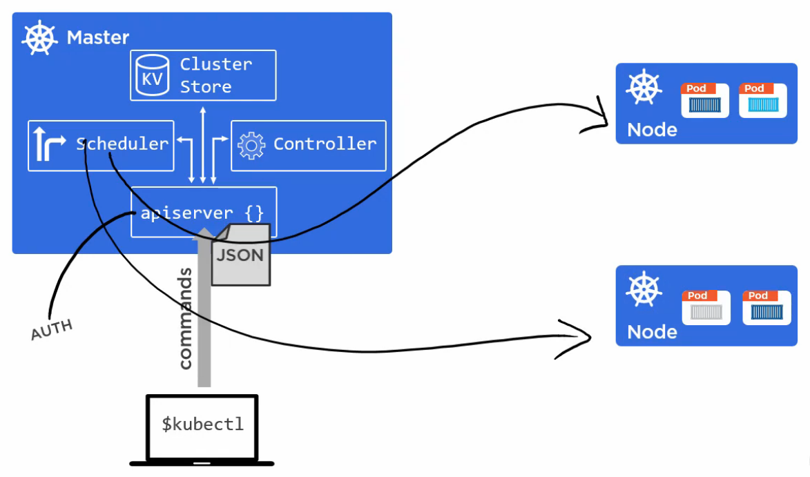
6.4 Nodes
- kubelet
- kubelet is the main kubernetes agent on the node (pretty much is the node)
- talks to containers
- registers node with cluster
- watches apiserver
- instantiates pods
- then it reports back the state back to the master
- kubelet itself does not do anything if something goes wrong, just reports it
- a pod is just a bunch of containers packaged together as a single unit
- because it is interacting with a container
- kubelet needs to interact container runtime
- container runtime examples (pluggable) does not matter which
- docker
- rkt
- container runtime examples (pluggable) does not matter which
- kubelet is the main kubernetes agent on the node (pretty much is the node)
- kube proxy
- network brains of the node
- makes sure every pod gets it’s ip
- ip per pod
- if you want to interface with each container in the pod, you will need to interface with a port
- proxy is also load balances across all pods in a service
- bunch of web servers talk to a backend
- a service will load balance the traffic from a web server pod to a backend pod
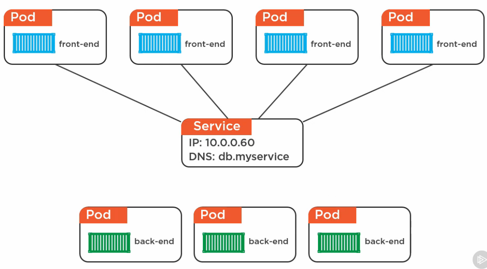
wrapup
- kubelet
- container engine
- kube-proxy
6.5 Desired State and the Declarative Model
- kubernetes operates on declarative model
- YAML or JSON is contains the desired state
- they are manifest files that describe a record of intent
- YAML or JSON is contains the desired state
- it’s up to kubernetes to get it there at that point
- pulling images
- building networks
- starting containers
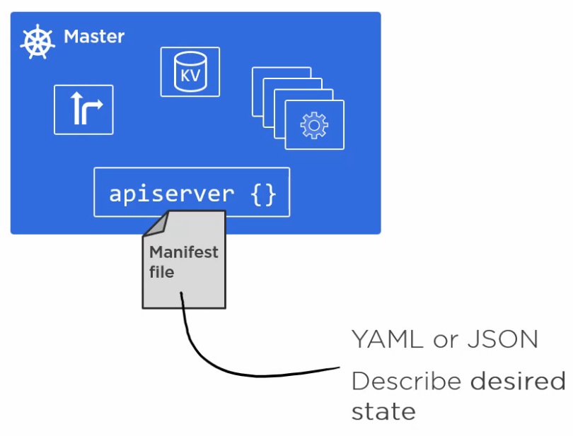
- example of desired state of a cluster
- kubernetes control plane runs through reconciliation loops that constantly check if desired state = actual state
- 3 nodes, one pod is running on each of those nodes:
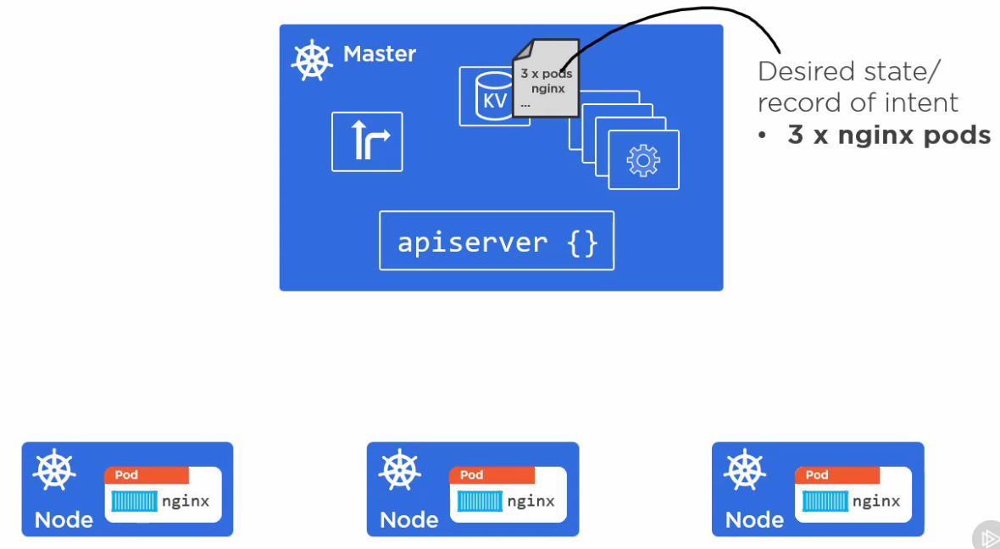
- node goes down
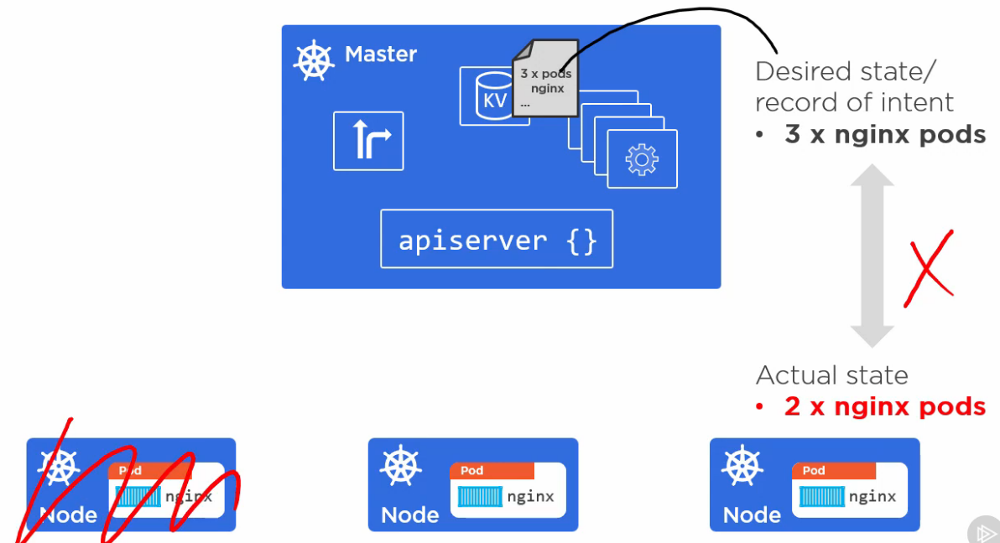
6.6 Pods
- vmware runs vms
- docker runs containers
- kubernetes runs pods
- cannot run a container directly on kubernetes
- needs to be running on a pod
- typically one container running on a pod but in more advanced configuration you can have more than one container running on a pod
- what actually is a pod
- ring-fenced environment
- 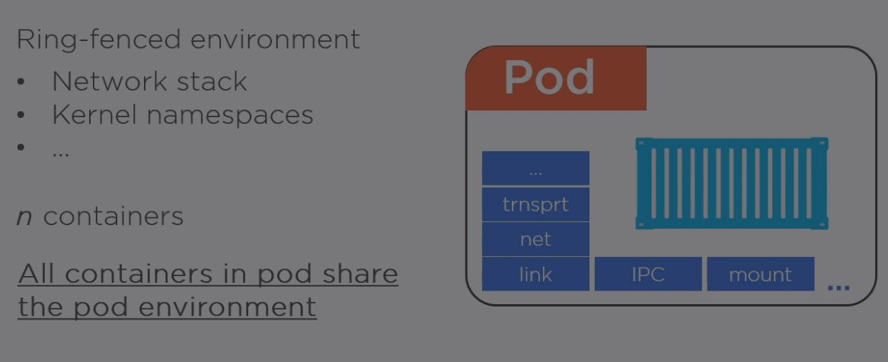
- if the use case for containers are tightly coupled and need access to the same resources
- stick them in the same pod
- 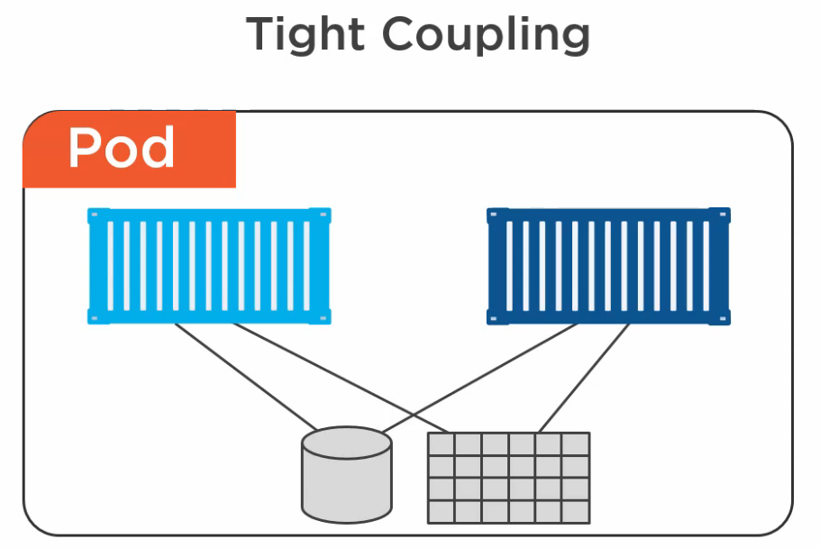
- if the use case can be loosely coupled, stick them in separate pods in couple them over the networks
- 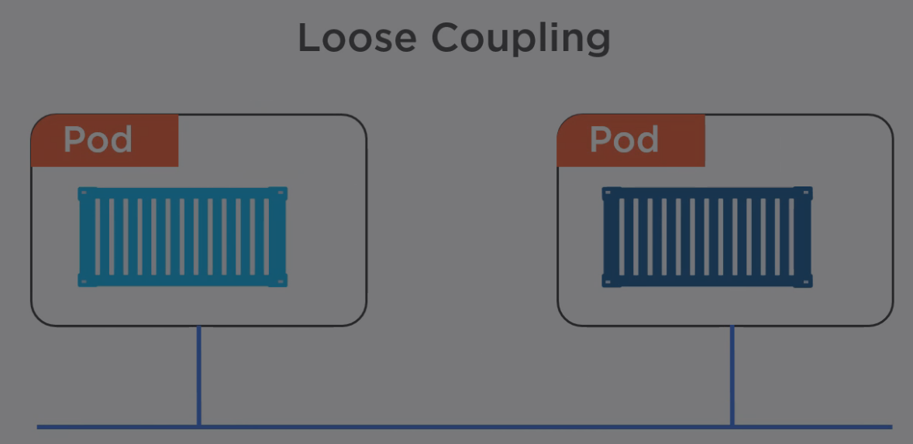
- the unit of scaling in kube is the pod
- you want to scale an app? you would add/remove pods
- you don’t scale by adding more containers to an existing pod
- add/remove pod replicas
- 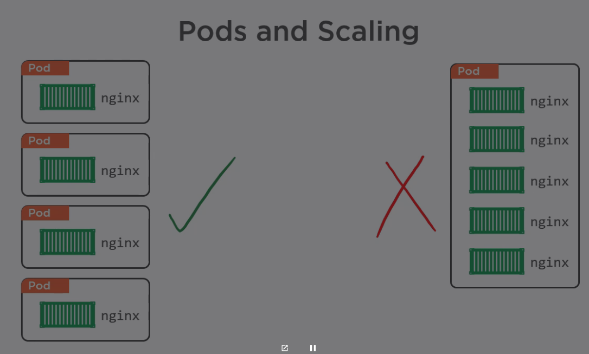
- example of a multi-container pod
- two or more complimentary containers
- web server and log scraper tailing logs off somewhere else
- 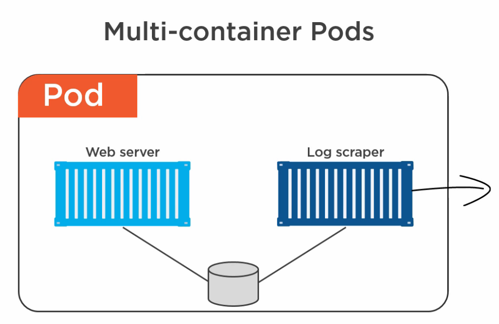
- 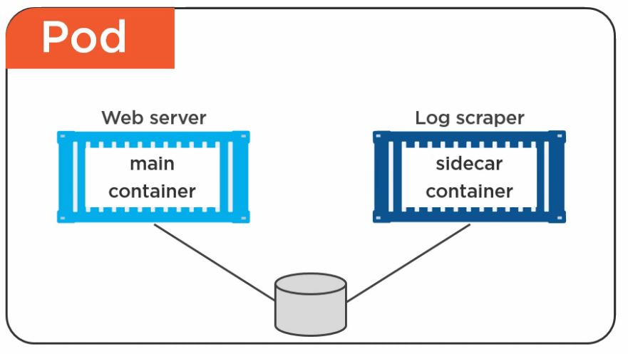
- web server = main
- log scraper = sidecar
- two or more complimentary containers
- pods are atomic
- it is either not there or there
- no state that it is in the process of coming up
- pod is not declared available until the whole pod is up and running
- you cannot have a single pod spread over multiple nodes
- pods’s life cycle
- they are born, live and die. you don’t bring one back to life
- 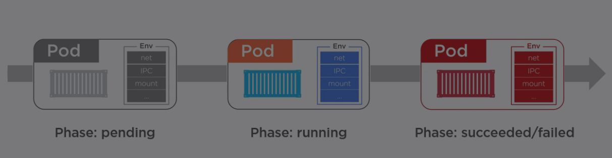
- this is consistent with pet vs cattle. when pods die, a totally new one can pop up in it’s place and replace it
- pod deployments
- replace replication controllers
- it is either not there or there
6.7 Services
- pods die and come back up somewhere else in the cluster (on a different node possibly)
- example of how IP address churn is addressed
- say pods running apps need access to pods running databases
- ips changing constantly. lose and gain when you scale
- this is where services come to play
- provides a single dns name and IP here so that the pods IP have nothing to do with it
- 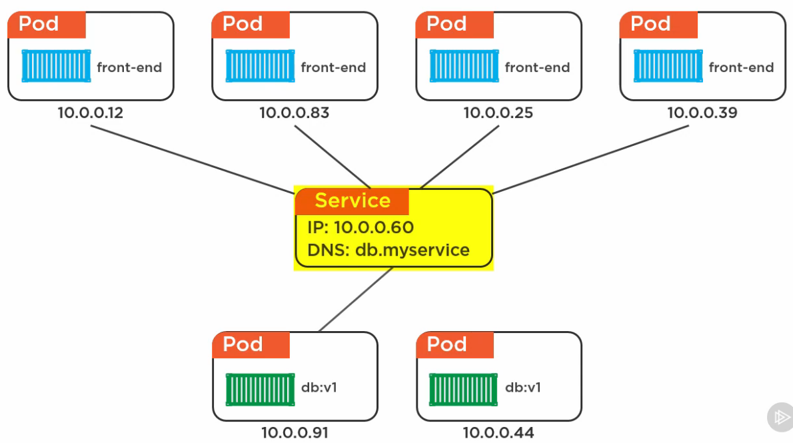
- if a pod dies and replaces itself, service updates and knows about it
- example of this happening is when the pods are being updated to a new version, can auto scale from 2 to 4 and back to two as easy as that
- labels
- labeled BE pods with relevant information, the labels tie the pod to the service
- 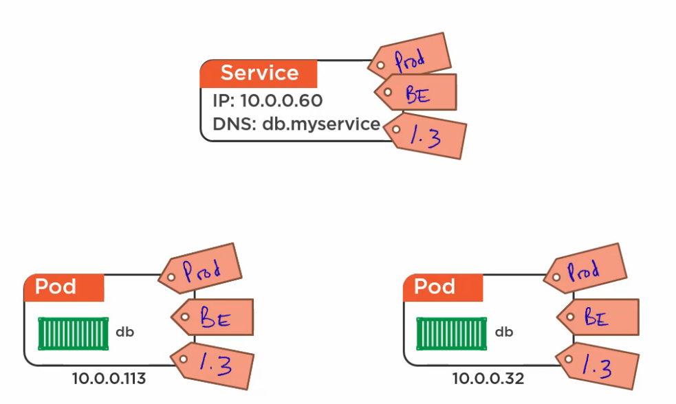
- when we are updating can remove the tag on the service that makes it exclusive to servicing one version
- 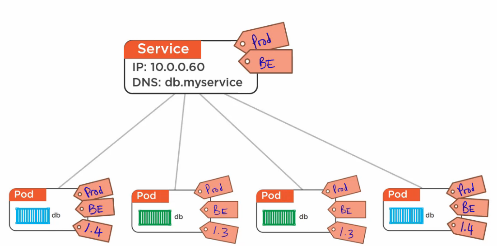
- load balancing across them all until we are ready to be fully on the new version
- 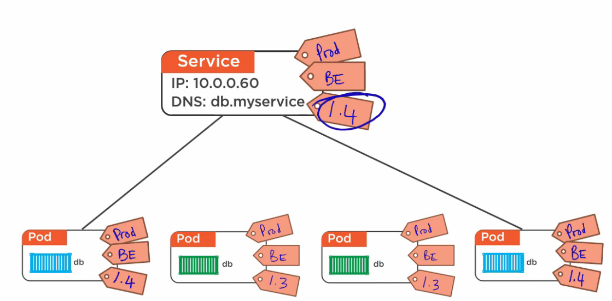
- services only send traffic to healthy pods
- can configure the service to point to things outside the cluster
6.8 Deployments
- our infrastructure = masters and nodes
- 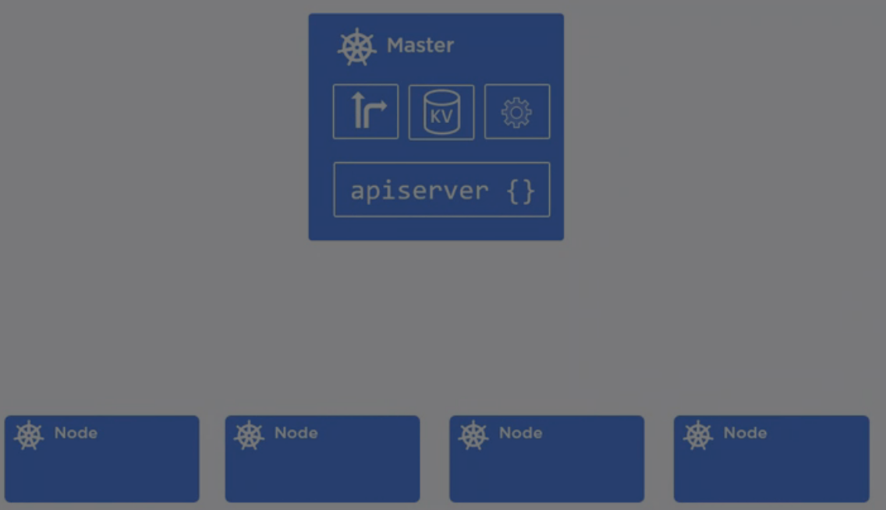
- pods are running on the nodes
- deployments = declarativeness
- declare through the manfiest yml or json files
- self documenting, versioned, spec-once deploy many
- makes for much simpler rollbacks and rolling updates
- the declaration is deployed by kube via the apiserver
- rolling updates
- can run multiple concurrent versions
- blue-green deployments
- canary releases
6.9 Bringing It Home
- just give us linux, we’ll give you kubernetes
- master node setup
- master (control plane
- apiserver
- cluster store
- api server talks to it
- node/minion
- where the work happens
- kubelet
- container engine
- kube-proxy
- example
- issue work to master via api server (instruction = manifest files)
- master decides where to run the work
- gets dished out to the worker nodes
- they report back state changes to the master
- rest objects in kubernets api
- pods
- atomic unit of scheduling
- replication controllers
- old
- deployments
- RC, rolling updates, rollbacks
- services
- stable networking
- pods